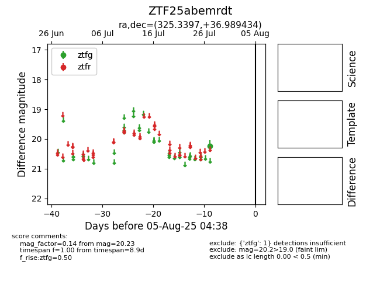

Target ZTF25abemrdt at 2025-08-05 04:38, see:
FINK: fink-portal.org/ZTF25abemrdt
Lasair: lasair-ztf.lsst.ac.uk/objects/ZTF25abemrdt
ALeRCE: alerce.online/object/ZTF25abemrdt
alt names
ZTF25abemrdt (ztf,fink)
coordinates:
equatorial (ra, dec) = (325.3397,+36.98943)
galactic (l, b) = (85.9215,-11.87217)
photometry
last ztfg=20.23
1 ztfg detections
